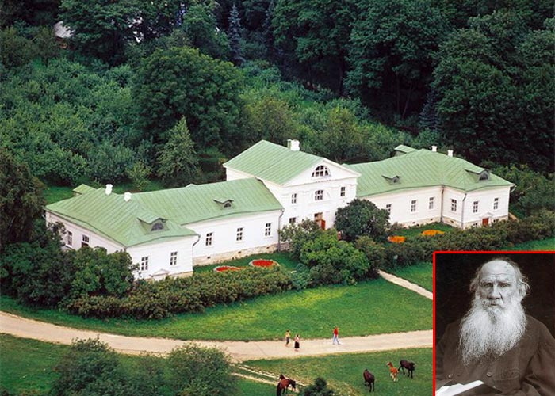
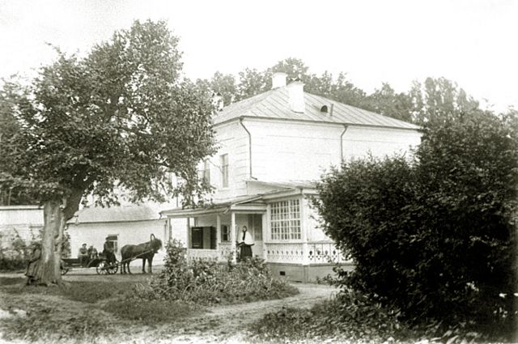

Ясная Поляна — родовое имение русского писателя Льва Николаевича Толстого (1828-1910), расположенное в Щекинском районе Тульской области (в 14 километрах от Тулы). Здесь писатель родился и прожил около 60 лет. В Ясной Поляне он создал романы "Война и мир", "Анна Каренина", многие повести, рассказы, статьи; редактировал журнал "Ясная Поляна" (1862).
Толстые полагали, что свое название Ясная Поляна получила от широкой солнечной долины, открывающейся при повороте к усадьбе с проезжего тракта, а возможно, по речке Ясенке, протекающей неподалеку.
История усадьбы уходит корнями в далекое прошлое. Когда-то эти земли были пограничными. В XVI веке для защиты московских земель в здешних лесах стали сооружать засеки. Появились призасечные поселения, и одним из них было сельцо Ясная Поляна. Впервые оно упоминается в документах 1652 года. Первым владельцем Ясной Поляны был засечный воевода Григорий Карцев. Впоследствии его многочисленным потомкам и принадлежали различные поместья на территории Ясной Поляны и ее окрестностей.
Часть Ясной Поляны в 1763 году приобрел князь Сергей Волконский, прадед Льва Толстого по материнской линии. Впоследствии усадьбу унаследовал его сын, Николай Волконский, который основательно изменил ее облик в ходе коренной реконструкции. Скупив у прежних владельцев разрозненные части Ясной Поляны, он создал здесь крупное имение, к которому и стали относить название "Ясная Поляна".
От князя Николая Волконского Ясная Поляна перешла к его единственной дочери, которая через год после смерти отца вышла замуж за графа Николая Толстого. Он достроил большой дом, в котором его семья поселилась в 1824 году, увеличил свои земельные владения. В семье Толстых родилось пятеро детей: четверо сыновей и дочь. В 1847 году произошел раздел родительских имений между братьями Толстыми. Льву Толстому отдали Ясную Поляну, в которой он поселился, но вскоре разочарованный неудачным опытом хозяйствования уехал в Москву, потом в Петербург, затем поступил на военную службу, где ему понадобились деньги на издание "Военного листка" — журнала для солдат. Из-за этого был продан на своз большой яснополянский дом. Его перевезли за 40 верст (около 42,7 километра) от Ясной Поляны в село Долгое, где он простоял до 1913 года и был разобран за ветхостью. На месте постройки остался лишь камень из его фундамента, на котором впоследствии была выбита надпись: "Здесь стоял дом, в котором родился Л.Н. Толстой".
В конце 1850-х годов Лев Толстой вышел в отставку и вернулся в Ясную Поляну. Он поселился в одном из флигелей, ставшем со временем домом для него и его семьи. Впоследствии к центральной части дома – нескольким комнатам, расположенным анфиладой, были добавлены пристройки по мере роста семьи Толстых.
В 1859 году Лев Толстой открыл школу для крестьянских детей во флигеле (Толстые называли его "другим домом", а позднее – флигелем Кузминских). Он расширил лесные массивы, яблоневый сад. Постепенно площадь яснополянских садов выросла в четыре раза и превысила 40 гектаров, а лесные посадки в Ясной Поляне стали занимать 254 гектара.
В 1892 году Лев Толстой отказался от собственности и разделил все, чем владел, между наследниками. Ясную Поляну получили жена, Софья Андреевна, и совсем еще маленький младший сын Ваня, в 1895 году умерший от скарлатины.
В октябре 1910 года, выполняя свое решение прожить последние годы соответственно своим взглядам, Лев Толстой тайно покинул Ясную Поляну, но по дороге заболел воспалением легких и 20 ноября (7 ноября по старому стилю) скончался. Он был похоронен в Ясной Поляне на краю оврага в лесу Старый Заказ.
Превращение Ясной Поляны в музей было сложным и длительным процессом. В 1911 года вдова писателя Софья Андреевна дважды обращалась к императору Николаю II с просьбой принять Ясную Поляну под охрану государства, но получала отказ. Было решено назначить вдове писателя пенсию, которая отчасти шла на содержание усадьбы. Софья Андреевна делала все возможное, чтобы дом, парк и усадебные постройки сохранить в прежнем виде. Активное участие в жизни усадьбы принимали дети Льва Толстого: Сергей (автор первого путеводителя по Ясной Поляне, 1914) и Александра.
Усадьба уцелела в годы Гражданской войны. Из уважения к памяти Толстого яснополянские крестьяне уберегли ее от погрома.
27 мая 1919 года Народный комиссариат просвещения выдал Александре Толстой охранную грамоту на Ясную Поляну, в которой говорилось об исключительной культурной ценности находящихся на ее территории предметов. Усадьба была объявлена народным достоянием и взята под охрану государства. 10 июня 1921 года вышло постановление Всероссийского Центрального Исполнительного Комитета (ВЦИК), согласно которому усадьба Толстого в Ясной Поляне объявлялась государственным музеем-заповедником. "Комиссаром-хранителем" музея была назначена Александра Толстая, которая сыграла огромную роль в создании музея и его развитии в 1920-е годы. Но в 1929 году она была вынуждена навсегда покинуть Советский Союз.
В 1930-е годы особое внимание уделялось восстановлению и сохранению Ясной Поляны в исторически неприкосновенном виде. Началось изучение истории Ясной Поляны по документам и опросам современников Толстого; была восстановлена пасека, приводились в порядок сады, производились посадки деревьев взамен вымерших. Работы велись под руководством Ботанического сада Академии наук СССР.
В 1940 году мастера Государственной Третьяковской галереи отреставрировали произведения живописи в доме Толстого (полотна работы Репина, Ге, Крамского). Ясная Поляна была передана в ведение Академии наук СССР; музей стал превращаться в научно-исследовательский центр изучения наследия Льва Толстого.
Во время Великой Отечественной войны экспонаты музея были эвакуированы в Томск. Эвакуацию организовала внучка писателя Софья Толстая-Есенина, которая в 1941 году стала директором объединенных толстовских музеев. Ясная Поляна была оккупирована в течение 47 дней, с 29 октября по 14 декабря 1941 года. При отступлении немецко-фашистских войск дом Толстого был подожжен, но пожар удалось потушить, в усадьбе сразу же начались восстановительные работы. Первая реставрация была завершена к маю 1942 года. В мае 1945 года экспонаты дома Толстого вернулись на свои прежние места. Восстановление музея-усадьбы продолжалось до середины 1950-х годов, когда были воссозданы некоторые хозяйственные постройки, вымерзший перед войной яблоневый сад, проведена реставрация дома.
В 1986 году музей-усадьба "Ясная Поляна" получил статус Государственного мемориального и природного заповедника; в 1993 году — статус объекта культуры особо важного значения.
Музей-усадьба Л.Н. Толстого "Ясная Поляна" занимает 412 гектаров заповедника. В экспозицию музея входят дом писателя, литературный музей, его библиотека, дом Волконского, могила Толстого, старинный липовый парк, пруды, леса, луга, пашни и сады, а также десятки мемориальных объектов и богатейшие фонды бесценных реликвий, связанных с жизнью писателя. Обстановка в доме-музее Л.Н. Толстого сохранена такой же, какой ее оставил сам писатель, навсегда покидая Ясную Поляну в 1910 году.
В структуру музея включен целый ряд филиалов. Прежде всего, это культурно-исторические места, связанные с именем Толстого: Никольское-Вяземское, Пирогово, Покровское, Мансурово, станция Козлова Засека, Крапивна. К филиалам относится и научно-культурный центр "Ясная Поляна" в Туле, где располагаются издательский дом и художественная галерея.
Как добраться?
Ясная Поляна - родовое имение русского писателя Льва Николаевича Толстого (1828-1910),
расположенное в Щекинском районе Тульской области (в 14 километрах от Тулы).
Чтобы приехать в усадьбу на машине, нужно двигаться по федеральной трассе М2 «Крым»
Затем — на юг на Орловское шоссе и двигаться по нему до музея.